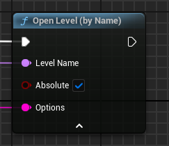
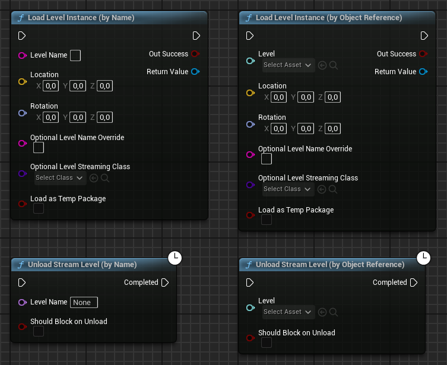
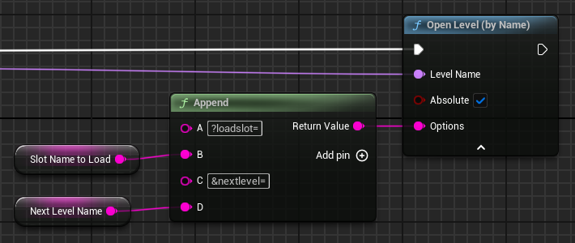

Carga de niveles y transiciones
En Unreal Engine la carga de un nuevo nivel se realiza usando el método {{< api OpenLevel >}} indicado la ruta del nivel a cargar (ver en la Figure 1).

El problema es que durante la carga el juego se queda congelado, pese a que los jugadores esperan que se muestre una pantalla de carga. Para implementar una pantalla de carga, existen principalmente dos opciones: streaming de niveles, carga asíncrona de niveles o mediante el MoviePlayer.
Streaming de niveles
El streaming de niveles es una técnica que permite cargar y descargar partes de niveles de forma dinámica durante la ejecución del juego[Ver «Level streaming» en @TorresD3DLevelStreaming; y @UnrealLevelStreaming]. Concretamente, al comienzo de la partida se carga el nivel principal –llamando nivel persistente– y a medida que el jugador avanza por el nivel, se van cargando los subniveles que se necesiten.
Esta técnica permite que cuando los niveles son muy grandes para ser cargados en su totalidad, se puedan dividir en subniveles que se cargan y descargan según sea necesario. También se puede utilizar para facilitar la colaboración entre varios desarrolladores, ya que cada uno puede trabajar en un subnivel diferente[Ver «Colaborar con el VCS» en @TorresD3DProjectStructureTips].
Utilizar esta funcionalidad para implementar una pantalla de carga implica que en todo momento lo que hay cargado es un nivel persistente vacío y que los niveles del juego son realmente subniveles que se cargan y descargan según sea necesario. Mientras esta carga ocurre, se puede instanciar y mostrar un widget en la interfaz de usuario con la pantalla de carga.
La carga de un subnivel se realiza llamando al método {{< api LoadStreamLevel >}} y la descarga llamando al método {{< api UnloadStreamLevel >}} (ver la Figure 2), cuyos argumentos ShouldBlockOnLoad y ShouldBlockOnUnload, respectivamente, en C++ permiten indicar que la carga o descarga se realice de forma asíncrona, sin bloquear todo el juego. Ambas funciones notifican cuando la carga o descarga ha finalizado, para continuar con la transición hacia el nuevo nivel.

Utilizando el método {{< api GetStreamingLevel >}} se puede obtener una referencia a un subnivel, de forma que, entre otras, cosas se puede controlar su estado de visibilidad.
El principal problema de esta técnica es que obliga a utilizar el mismo GameMode para todos los niveles del juego, ya que el GameMode lo determina el nivel persistente. Además, durante el desarrollo, probar un nivel concreto del juego es más complicado, ya que siempre se tiene que cargar el nivel persistente para luego cargar los subniveles necesarios para llegar al nivel que se quiere probar.
Carga asíncrona de niveles
Idealmente, lo que interesaría es tener una función OpenLevel() que fuera asíncrona. De esta forma, se podría cargar el widget de la pantalla de carga y llamar a la función OpenLevel() para cargar el nivel que se quiere mostrar. Cuando la carga del nivel finalice, ocultar la pantalla de carga y dejar que se muestre el nivel.
La ventaja de esta opción es que así, cada nivel tiene su propio GameMode y se pueden probar los niveles de forma independiente en el editor, de manera que se puede iterar de forma más ágil. Además, nada impide que cada nivel use subniveles, tanto para dividir el nivel en partes más pequeñas como para facilitar la colaboración entre los desarrolladores.
Para conseguir un OpenLevel() asíncrono, se puede utilizar el método {{< api LoadPackageAsync >}} en C++. Este método permite cargar un paquete de forma asíncrona, de manera que se puede cargar el nivel que se quiere mostrar y cuando la carga finalice, llamar a OpenLevel() para mostrar el nivel de manera mucho más rápida:
void UMyGameInstance::AsyncOpenLevel(FName LevelName)
{
// Mostrar pantalla de carga...
FLoadPackageAsyncDelegate LoadCompleteDelegate;
LoadCompleteDelegate.BindUObject(this, &
UMyGameInstance::OnAsyncLoadComplete);
1 LoadPackageAsync(LevelName.ToString(), LoadCompleteDelegate);
}
void UMyGameInstance::OnAsyncLoadComplete(const FName& PackageName,
UPackage* LoadedPackage, EAsyncLoadingResult::Type Result)
{
if (Result == EAsyncLoadingResult::Succeeded)
{
2 UGameplayStatics::OpenLevel(this, PackageName);
}
else {
UE_LOG(...);
}
// Ocultar pantalla de carga...
}- 1
- Carga del contenido del nivel de forma asíncrona.
- 2
- Activación del nivel cargado.
Si la pantalla de carga no se puede implementar solo con widgets de la interfaz de usuario, se puede crear un nivel ligero de transición con OpenLevel(). Luego este nivel hace la carga del nivel definitivo tal y como hemos descrito, mientras se muestra la escena de carga o, incluso, deja al usuario interactuar con ella. Esta carga se puede lanzar desde el BeginPlay() del GameMode del nivel de transición.
Para que el GameMode sepa qué nivel tiene que cargar, el nombre de este se puede pasar como una opción en el argumento Options de OpenLevel(). Este argumento sirve para pasar información adicional al GameMode del nivel cargado en la forma de una cadena de consulta URL, como se puede observar en la Figure 3.

Esta cadena de consulta se recibe en el método InitMode() del GameMode del nivel de transición. La cadena se puede analizar con el método {{< api ParseOption >}} o se puede leer un valor concreto desde cualquier actor del nivel llamando a GetWorld()->URL.GetOption().
MoviePlayer
{{< api MoviePlayer >}} es un módulo que permite reproducir vídeos durante el juego, por ejemplo, durante la carga de un nivel.
El MoviePlayer se ejecuta en su propio hilo, por lo que no se bloquea mientras el motor carga el nivel. Además, permite añadir widgets de interfaz de usuario sobre el reproductor de vídeo, lo que facilita ofrecer feedback al jugador durante la carga. Sin embargo, como el MoviePlayer se ejecuta en su propio hilo y no en el hilo de juego, no se pueden utilizar UObject, como los widgets UMG. En su lugar se deben utilizar widgets de Slate[@UnrealSlate], que son en los que se basa UMG.
Inclusión del módulo
Para utilizar MoviePlayer en un proyecto de C++, primero se debe incluir el módulo MoviePlayer en el archivo .Build.cs del módulo del juego que lo vaya a utilizar:
PublicDependencyModuleNames.AddRange(new string[] {
"Core", "CoreUObject", "Engine", "InputCore", "EnhancedInput",
"MoviePlayer"
});GameInstance y FCoreUbjectDelegates
El motor de Unreaal Engine tiene una clase {{< api FCoreUbjectDelegates >}} que permite registrar funciones que se ejecutarán cuando se produzca un evento del motor. Entre esos eventos está PreLoadMap y PostLoadMap que se ejecutan antes y después de cargar un nivel, respectivamente.
Por tanto, el objetivo es registrar un método que se ejecute cuando se produzca el evento PreLoadMap para mostrar la pantalla de carga y configurarla para que desaparezca cuando el el nivel termine de cargarse.
Opcionalmente, se puede registrar un método que se ejecute cuando se produzca el evento PostLoadMap para hacer cualquier tarea adicional que se necesite cuando el nivel termine de cargarse.
Puesto que el objeto en el que se llamará a estos métodos debe existir mientras se cargan los niveles, es aconsejable utilizar GameInstance o un subsystem de GameInstance para implementar estos métodos.
UCLASS()
class MYPROJECT_API UMyGameInstance : public UGameInstance
{
GENERATED_BODY()
public:
virtual void Init() override;
UFUNCTION()
virtual void BeginLoadingScreen(const FString& MapName);
// ...
};void UMyGameInstance::Init()
{
FCoreUbjectDelegates::PreLoadMap.AddUObject(this, &
1 UMyGameInstance::BeginLoadingScreen);
}- 1
-
Registrar el método
BeginLoadingScreen()para que se ejecute cuando se produzca el evento PreLoadMap.
Esta nueva clase GameInstance se debe configurar en el proyecto, como vimos en la ?@sec-gameinstance.
En el método BeginLoadingScreen() se configura la pantalla de carga usando MoviePlayer, para lo que existe una estructura llamada {{< api FLoadingScreenAttributes >}} que contiene todos los atributos necesarios. Entre ellos, bAutoCompleteWhenLoadingCompletes, que indica si la pantalla de carga debe desaparecer cuando el nivel termine de cargarse, y MoviePaths, que contiene la ruta de los vídeos que se van a reproducir.
void UMyGameInstance::BeginLoadingScreen(const FString& MapName)
{
1 if (!IsRunningDedicatedServer())
{
FLoadingScreenAttributes LoadingScreen;
2 LoadingScreen.bAutoCompleteWhenLoadingCompletes = true;
3 LoadingScreen.MinimumLoadingScreenDisplayTime = 5.0f;
LoadingScreen.MoviePaths.Add(
4 TEXT("/Game/Movies/MyLoadingMovie"));
5 GetMoviePlayer()->SetupLoadingScreen(LoadingScreen);
}
}- 1
- Comprobar que el método no se está ejecutando en un servidor dedicado porque en ese caso no se monstrará la ventana de carga.
- 2
- Configurar la pantalla de carga para que desaparezca cuando el nivel termine de cargarse.
- 3
- Configurar el tiempo mínimo que se muestrará la pantalla de carga.
- 4
- Añadir la ruta del vídeo que se va a reproducir.
- 5
- Configurar y mostrar la pantalla de carga.